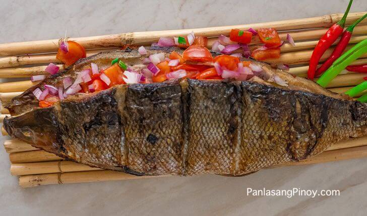

The Best Grilled Milkfish Recipe
The Milkfish is the sole living species in the family Chanidae. However, there are at least five extinct genera from the Cretaceous. The species has many common names. The Hawaiian name for the fish is awa, and in Tahitian it is ava.
Grilled Milkfish is grilling milkfish stuffed with spices, seasoned tastely, and grilled nicely to bring out the combination of flavors in such a simple but delicious dish.
Grilled Milkfish

INGREDIENTS
- 1 piece milkfish bangus, with scales but guts removed
- 1 piece tomato ripe, diced
- 1 piece red onion diced
- 1 piece lemon or 3 pieces calamansi (optional)
- 1 tablespoon ginger minced
- 2 teaspoons salt
- 1/2 teaspoon ground black pepper
INSTRUCTIONS
- Wash the milk fish. Pat it dry using a paper towel.🐟
- Open the incision and then rub the salt on the inside of the dish. The fish should have an incision either above or below the belly area.🐟
- Meanwhile, combine tomato, onion, and ginger in a large bowl. Squeeze some lemon juice in and add the ground black pepper. Gently stir.🍅
- Stuff the mixture inside the milkfish.🍲
- Grill the fish in medium heat for about 10 to 12 minutes per side.🍳
- Serve with toyomansi and steamed rice.🍚
- Share and enjoy!🍴
BEST RECIPES FOR GRILLED MILKFISH